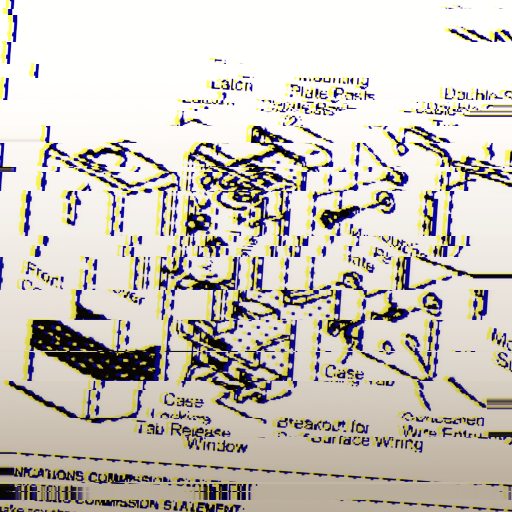
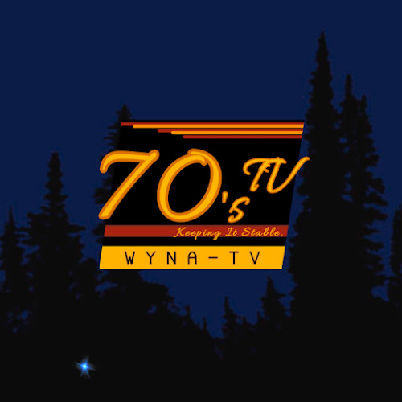

70's TV Local Website
Est. 1949(Home Page) |
Community |
Services |
Watch Live |
Moments |
What is 70's TV?
70's TV or WYNA-TV is a local television station that broadcasts paid programs and you're everyday news, like weather, fun, and sports. WYNA-TV is tlevision station that is only exclusive for Domus County. But don't be sad!, WYNA-TV is now available for all of the United States!, with the all new WYNA Transmitter.

Before 70's TV
Our station went through different names, like 50's TV, and 60's TV. But before televisions, we were a newspaper company, and a radio station. Our newspaper company was called 40's Newspaper, and our radio station was called WYNA Radio. After the fame of televisions, we switched to a television broadcast. During the switching process, we had closed down our newspaper brand, but the radio station was still broadcasted, until today.
After more researching, most of peoples still use radio, over televisions, with this we hadn't close our radio station, until today. Today most of our radio broadcating, uses an outdated type of radio. To solve this, we recommend to use the WYNA Transmitter, and install it to the radio hardware, and car radios. to listen to our station.
Watch your favorite moments!
We have made a channel on-line, Where you can watch you're favorite moments, from every decades!

70's TV Channel
Watch Live!
Watch our live broadcast right here!